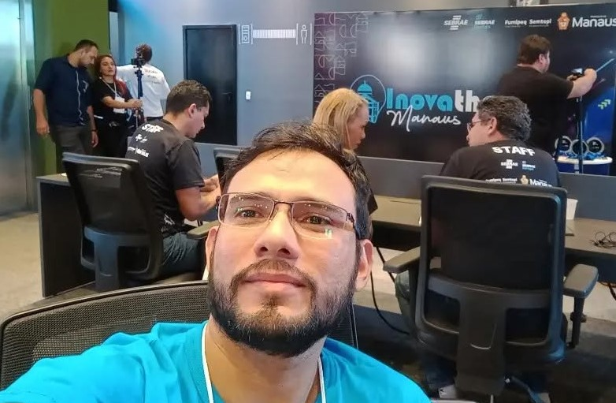

01 · sobre
Da sala de aula ao código de produção

Sou Analista de Sistemas de formação. Passei anos em gestão, docência e inovação — hoje, 100% dedicado a construir software Java que resolve problemas de negócio de verdade. Curioso por natureza, gosto de transformar ideias em sistemas funcionando, com boas práticas de arquitetura e testes desde o primeiro commit.
- 3× vitórias em hackathons de tecnologia
- 1 certificação ISO 9001 implantada do zero
- ∞ curiosidade por Java, Spring Boot & Cloud
02 · stack
Ferramentas que uso para construir
Back-end
Front-end
Dados & DevOps
Arquitetura & Metodologia
03 · projetos
O que já foi compilado
Novos repositórios Java/Spring Boot entram aqui conforme forem concluídos.
04 · diferenciais
Hackathons & premiações
1º Lugar — Inovathon Manaus 2023 · Prefeitura de Manaus
Manas Hub — startup que conecta mães a babás de confiança. Cofundador e CEO, aplicando Design Thinking e metodologias ágeis.
Ler cobertura →2º Lugar — Hacka for Justice 2023 · TJAM & Manaus Tech Hub
ACESSOJUS — uso de IA para orientação jurídica ao cidadão. Líder do projeto (Equipe Gama).
Notícia TJAM →3º Lugar — Human Hack Fest 2019 · MPAM
MoveAção – Human to Human — proposta humanitária de apoio a refugiados.
Notícia MPAM →Mentor — Desafio Liga Jovem 2023 · Sebrae
Cria PS — idealizador e líder, com gestão de equipe de desenvolvimento web usando metodologias ágeis.
Sobre o desafio →🎓 Participação na 25th International Conference on Artificial Intelligence in Education (AIED 2024) — iaied.org
05 · contato
Vamos do brainstorming ao build juntos?
Manaus, AM — aberto a oportunidades como Desenvolvedor Java Backend.